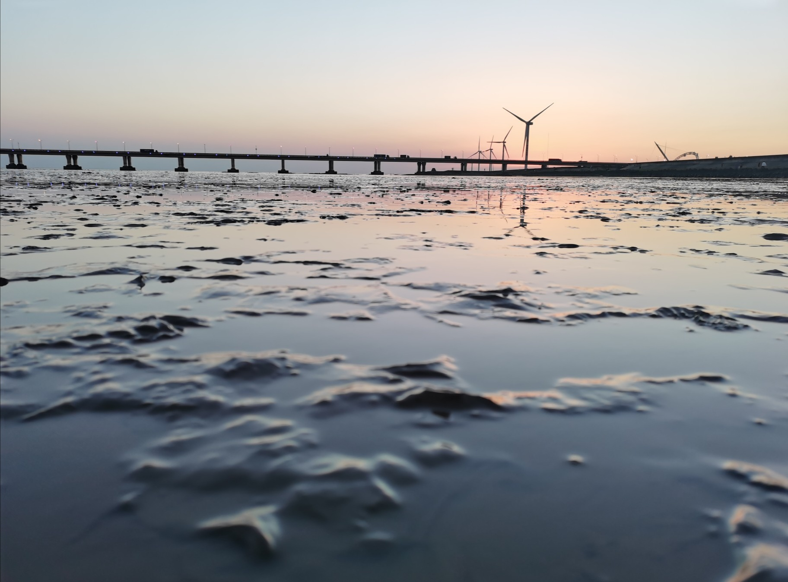

用一句话总结我所经历的2020年
“在理想中死亡，在现实中重生。”
今年是无比艰难的一年，以至于每个人都在年末的时候对未来有着美好的祝愿。
像2019年的这个时候我们祝愿的那样。
突如其来的疫情打乱了我们每一个人的既定节奏，年初一直待在家里，我在一段时间内对外面发生的事情没有什么实感。但电视里看到的疫情速报是真的，手机里浏览到的在疫情下普通人的求助是真的，看着窗外的三环路从川流不息变为空无一车也是真的。在本应是开学典礼的时间，各科老师在线上，透过摄像头向我们传来了特殊的问候。在家里上课和考试特别考验一个人的心志，尤其是毅力和自制力，两样我最缺的东西。网课的新奇感渐渐变为无聊和放纵。甚至后来把部分课和晚自习当成我的自习课，连上课网站都懒得打开签到。
开学再见面时，我或多或少有些彷若隔世的感觉。
高考前的时间，在紧凑的课程和成堆的卷子面前显得弥足珍贵，同时也快得让我几乎感受不到时间的飞逝。我曾经觉得我是一个十分在意他人评价的人，并且常常因为褒扬沾沾自喜。但在我成绩真真实实的上升之后，在我听到同学戏谑地称我“黑”马的时候，在我听到室友说我扮猪吃老虎的时候，在听到金老在班会点名表扬我的时候，我的内心却没有多少喜悦的感觉。也许是因为我自知，我那远大的理想相对于我的努力而言仍然只是一个天边遥不可及的幻梦罢了。
在倒计时十五天的时候，我翘掉了那天下午的数学考试，敲开了金老办公室的门。我想在剩下的时间回家自习，即使他在之前的班会明确地表示过禁止，我仍想要一试，因为我觉得这可能是我达成理想的最后机会了。我以为我的口才和出奇好的三诊成绩足以说服他，可当他以一种不容置疑的口气说出“不行。”的时候，我却发现 我除了流泪什么也做不到。他让我去找副校长请假，犹豫再三，我最终叩响了校长办公室的门…
事情最后有了个折中的解决，金老最后松了口，但仍需要找副校长商量，因为作为班主任没有权限放学生离校那么长的时间。而我，在学校继续待了五天后，在家里度过了高考前的最后十天，幻想着这十天能让我的成绩再来次质的飞跃。
可惜生活是不会按着个人主观意愿的剧本来进行的。在亲眼看到结果之后，我感到头晕目眩。堆积如山的书和资料在高考后就被我卖掉，我自己断了复读这条路。我感到一股深深的愧疚，我觉得我对不起金老和其他各科老师对我的信任，我觉得我对不起和朋友夜谈时所谈及的远大梦想，我觉得我对不起爷爷，没能做到去年夏天给病榻上的他发去的视频里对他的承诺。我没能见到理想中的人，没能去到理想的学校，没能选到理想的专业，没能成为理想中的自己…
一段时间之后我才明白，这是一场再公平不过的考试，我不能简单地归因于紧张或是失利，它检验的是整个高中三年的学习。我的成绩既包含了最后一学期的努力，也有前两年的放纵。而我看到那些持之以恒努力的人，熬过一个又一个的黑夜，在日出之后，他们都得到了他们想要的梦想和成绩。
高考后的暑假我总是会对大学有各种各样的畅想。更大的平台，更多的自由，更广的见识，更多的机会，这些都是我对大学生活的憧憬。进学校的第一天我被新鲜感淹没，在第一天晚上，我躺在床上，多少有点睡不着。我仍在畅想着即将可能到来的丰富的社团，紧张的竞赛，珍贵的感情。
虽然实际的大学生活没有想象中的那般精彩，但我在几个月的时间里仍然收获了很多。最大的感受是十分真切的感受到: 越是看的越多，学的越多，越能感受到自己的浅陋无知，傲慢自大。我了解到有个学长以前在毛坦厂一年从大专水平努力到了我们学校的分数线；我在夜跑团里看到有人每天都坚持至少五公里，风雨无阻；我那最自信的英语，在我听到同班的有个人词汇量1w2时，在我看到有考插班生的人在十二月就已背完考研词汇的时，我那可怜的自尊与优越感被实实在在地击碎了。我想起暑假与朋友共勉的“总不能让高三成为人生的巅峰吧”，深知我还有很长的一条路要走。没能考到理想的分数不影响我喜欢现在的学校，哪怕它没有那么优秀，但它是我的平台，有它我才能有努力的机会。
下半年我听到最多的一个词是“内卷”，它是四川高考的现状，是图书馆七点就爆满的深层原因，是灯火通明的通宵自习室里考研人的焦虑。我不知道我的未来是否会更加艰难。在谈及梦想的时候，我对我未来的五年都有精细的规划和打算，但我却不知道如何迈出第一步。我到了小时候羡慕的年龄，却没有成为小时候想成为的人。我没有迷茫，我只有恐慌。
学校离海边很近，因此我有幸欣赏了一次海上日出和海上日落。临港离市区很远，没有光污染，晴朗的时候，即使在冬天 每天也能看到十颗以上的星星，我喜欢在夜跑之后就呆呆地望着天上的星星，从初秋时仍然可见的夏季大三角，到天气转凉时每天可见的火星，再到严冬时节的猎户座和闪耀的天狼星。每当我望着这些瑰丽而美好的景色的时候，我的思绪在操场边走马观花。唯独在这些时候，我不会因临近deadline而没做完作业而紧张，不会因还没达成梦想而彷徨失落，不会因对爱情抱有憧憬而神色迷离。临港的风很大，我拥抱着咸湿的海风，似乎这样就能将我所有的焦虑抛在风里，任它刮走远去。
“无穷的远方，无数的人们，都和我有关。”
后记
今年是我写年终总结的第一年，初心可能是小时候看到南方周末新年祝福的感动，又或许只是需要将一些情感用文字抒写出来，以将我乱糟糟的生活给稍微理顺一点，就像游戏中一个又一个的checkpoint，是一种记录，也是一种反思。
从知道到做到，有着一道鸿沟。“我们明白很多道理，却仍过不好这一生。”的原因大概如此。
路波折坎坷，这又长又短的一年也算是到了头，可有些事并不为人力所控。
努力了也会失败。
祈祷了也会落空。
逃避了也会遭重。
谋事在人，成事在天，不外如是。
即使如此，也不妨碍我们向前看。总得去努力才能知道结果，总得去尝试才能知成败，可别在开始前就露了怯。
在最后，我由衷的希望来年有好事发生，由衷的希望各位来年能心想事成。
愿各位平安喜乐
新年快乐！